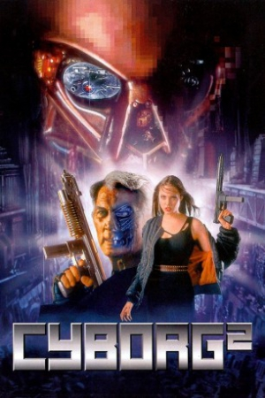

Country:United States, 99 minutes
Spoken languages:English, Mandarin
Genres:Action, Adventure, Sci-Fi
Director(s):Michael Schroeder
Writer(s):
Video Codec:Unknown
Number: 2313


Certification:
Storyline:
In the year 2074, the cybernetics market is dominated by two rival companies: USA's Pinwheel Robotics and Japan's Kobayashi Electronics. Cyborgs are commonplace, used for anything from soldiers to prostitutes. Casella Reese is a prototype cyborg developed for corporate espionage and assassination. She is filled with a liquid explosive called Glass Shadow. Pinwheel plans to eliminate the entire Kobayashi board of directors by using Casella
Cast:


Medium: Original DVD,
Loaned: No
Aspect ratio: Unknown